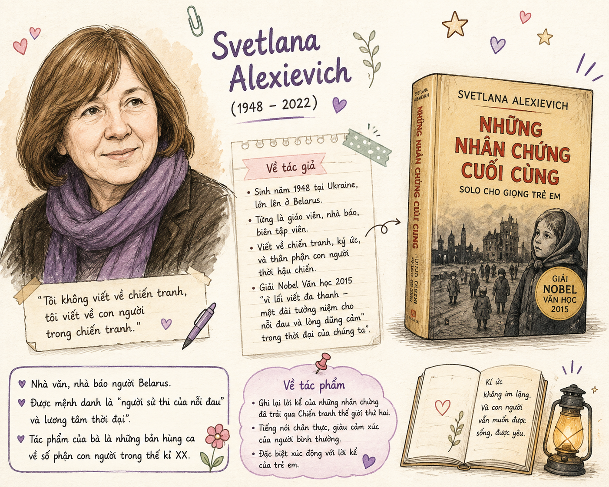
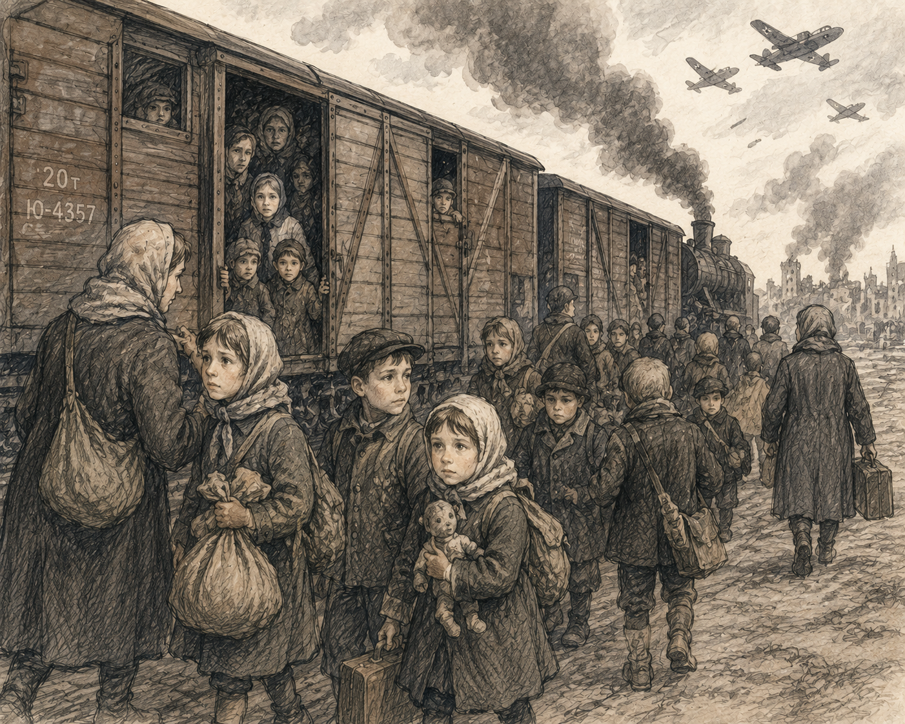

"Chiến tranh không chỉ cướp đi sinh mạng, mà còn tước đoạt tuổi thơ và để lại những vết thương lòng không bao giờ lành. Qua lời kể chân thực của nhân chứng Din-na Cô-si-ắc - một đứa trẻ 8 tuổi trải qua Thế chiến thứ hai, tác phẩm giãi bày nỗi đau mất mát cùng khát vọng tình mẹ cháy bỏng, nhức nhối suốt cả cuộc đời."

[Khung hình minh họa h1.png: Tác giả Svetlana Alexievich và cuốn sách Những nhân chứng cuối cùng]Xuất xứ: Rút từ cuốn "Những nhân chứng cuối cùng – Solo cho giọng trẻ em" (NXB Phụ nữ, Hà Nội, 2017).
Thể loại & Thao tác nghệ thuật: Truyện ký phi hư cấu sử dụng hình thức phỏng vấn các nhân chứng từng trải qua Thế chiến thứ hai từ thời thơ bé. Tác giả đóng vai trò ghi chép, chọn lọc và sắp xếp sự kiện.
Nhân chứng kể chuyện: Din-na Cô-si-ắc (Zina Kosyak) – lúc 8 tuổi học xong lớp Một thì chiến tranh bùng nổ; hiện là thợ tóc.
Văn học phi hư cấu (Non-fiction) của Svetlana Alexievich không sáng tạo ra nhân vật hư cấu mà dựa trên hàng trăm cuộc phỏng vấn ghi âm thực tế. Bà ghép nối những "giọng nói độc thoại" thành một bản hợp xướng lịch sử sống động và nghẹn ngào cảm xúc.
Tháng 5/1941: Din-na hoàn thành lớp Một, được bố mẹ tiễn đi trại hè đội viên ở Gô-rô-đi-sa (gần Min-xcơ). Mới bơi được 1 lần thì 2 ngày sau chiến tranh bùng nổ.
Ấn tượng đầu tiên: Lũ trẻ thơ ngây hò reo "Ura!" khi thấy máy bay Đức vì ngỡ là máy bay lạ, cho đến khi bom dội xuống. "Khi đó tất cả màu sắc đều biến mất" và từ "chết chóc" khó hiểu bắt đầu xuất hiện.
Hãy suy nghĩ về sự thay đổi đột ngột từ không khí trại hè vui tươi sang thảm họa chiến tranh.

[Khung hình minh họa h2.png: Hình ảnh đoàn tàu tản cư và trẻ em trong Thế chiến thứ hai]Nỗi ám ảnh từ "Mẹ": Đêm đến, trẻ em khóc rền gọi ba mẹ. Các cô giáo phải né tránh từ "mẹ" trong sách truyện vì chỉ cần ai nhắc đến, tất cả sẽ gào khóc không nguôi.
Sự nhầm lẫn ngây thơ: Din-na khai mình "thi lại" lớp Một chỉ vì nghĩ thi lại nghĩa là nhận được bằng khen.
Chuyến trốn chạy tìm mẹ: Trốn trại đi tìm mẹ, kiệt sức trong rừng được ông Bôn-sa-cốp cứu cưu mang. Chiến tranh kết thúc, chờ 2 tuần không thấy ai đón, cô bé lại trốn dưới gầm tàu về Min-xcơ.
Bi kịch cay đắng: Bố mẹ cô không bỏ rơi cô mà đã hy sinh trong trận bom khi lao ra ga tàu tìm con.
Đánh giá tác động của câu kết: "Tôi đã năm mươi mốt tuổi, tôi có hai con. Và tôi vẫn còn muốn mẹ.". Qua đó, em có thể cảm nhận sâu sắc rằng thời gian có thể trôi qua, con người có thể trưởng thành và làm cha làm mẹ, nhưng đứa trẻ bị tổn thương trong chiến tranh mãi mãi mang một khoảng trống vô tận không gì khỏa lấp được.
Khi đọc văn bản tư liệu/ký sự lịch sử: Cần phân biệt rõ thông tin khách quan (sự kiện, thời gian, địa danh) và cảm xúc, góc nhìn cá nhân của nhân chứng. Tác giả là người ghi lại nhưng đóng vai trò định hướng nghệ thuật qua việc lựa chọn và sắp xếp các chi tiết đắt giá.
Câu 1 (Trang 44): Hãy tóm lược nội dung được kể lại trong văn bản và cho biết những điểm nhấn quan trọng của câu chuyện.
Lời giải chi tiết:
- Tóm lược: Văn bản kể về kí ức chiến tranh của Din-na Cô-si-ắc lúc 8 tuổi. Sau chuyến đi trại hè năm 1941, chiến tranh nổ ra, cô bé phải tản cư qua nhiều nơi tới Mô-đô-vi-a. Tại trại mồ côi, cô đối mặt với nạn đói khủng khiếp, thiếu thốn vật chất và nỗi đau xa cha mẹ. Sau chiến tranh, cô chờ đợi bố mẹ nhưng họ đã qua đời vì bom đạn khi đi tìm cô. Đến năm 51 tuổi, cô vẫn đau đớn nhớ mẹ.
- Điểm nhấn quan trọng: Sự biến mất đột ngột của màu sắc bình yên; sự khắc nghiệt của nạn đói (ăn cỏ, giết ngựa Mai-ca); sự khao khát từ "mẹ" và kết thúc bi kịch mất cha mẹ.
Câu 2 (Trang 44): Chỉ ra những yếu tố tạo nên tính xác thực của các sự kiện được nhân vật kể lại cũng như trạng thái tâm lý của nhân vật.
Lời giải chi tiết:
- Yếu tố tạo tính xác thực: Tên nhân vật cụ thể (Din-na Cô-si-ắc, ông Bôn-sa-cốp, con ngựa Mai-ca), địa danh rõ ràng (Gô-rô-đi-sa, Min-xcơ, Mô-đô-vi-a), mốc thời gian (tháng 5 năm 1941), các chi tiết sinh hoạt chân thực (4 đứa chung đôi ủng, ăn vỏ cây, nồi nước tầm ma).
- Trạng thái tâm lý: Thơ ngây ngơ ngác ban đầu \(\rightarrow\) Sợ hãi trước cái chết \(\rightarrow\) Ám ảnh bởi nạn đói \(\rightarrow\) Mòn mỏi, tuyệt vọng vì khát khao tình mẹ.
Câu 3 (Trang 44): Phân tích một số chi tiết, hình ảnh tạo nên bức tranh cuộc sống đặc biệt được tái hiện trong văn bản. Chi tiết nào gây ấn tượng mạnh nhất?
Lời giải chi tiết:
- Các chi tiết đặc sắc: Nồi nước tầm ma trước cửa mỗi nhà, hình ảnh con ngựa Mai-ca già bị giết làm xúp, cô bé điên canh con chuột trong hang, những đứa trẻ khóc gào đêm khuya khi nghe ai đó nhắc từ "mẹ".
- Chi tiết gây ấn tượng mạnh nhất: Lũ trẻ tước vỏ cây, khoét túi áo đút cỏ vào nhai lại như "những con vật nhai lại". Chi tiết này phơi bày tận cùng sự tàn khốc của nạn đói do chiến tranh gây ra, biến những đứa trẻ thơ thành sinh linh tội nghiệp đấu tranh giành giật sự sống từ ngọn cỏ.
Câu 4 (Trang 45): Vai trò và thái độ của tác giả khi ghi lại các sự kiện do nhân chứng kể lại?
Lời giải chi tiết:
- Vai trò tác giả: Người lắng nghe, ghi chép, lắng lọc và tổ chức các lời kể riêng lẻ thành một chỉnh thể nghệ thuật có sức cuốn hút và xâu chuỗi logic.
- Thái độ: Đồng cảm sâu sắc, tôn trọng tính khách quan của sự thật lịch sử, thể hiện niềm căm giận chiến tranh phi nghĩa và nâng niu từng nỗi đau của con người.
Câu 5 (Trang 45): Yếu tố tạo nên sức lay động của văn bản và thông điệp bạn nhận được?
Lời giải chi tiết:
- Yếu tố lay động: Tính chân thực tuyệt đối của giọng kể trẻ thơ, những chi tiết ám ảnh về nạn đói và nỗi khát khao tình mẫu tử tột cùng.
- Thông điệp: Tố cáo tội ác chiến tranh tàn bạo; lên tiếng bảo vệ hòa bình và quyền được sống hạnh phúc của trẻ em; khẳng định giá trị thiêng liêng vô giá của tình cảm gia đình.
Chọn đáp án đúng nhất cho 10 câu hỏi dưới đây để hoàn thành thử thách!
Bài 1 (Thống kê và So sánh nghệ thuật): Lập bảng so sánh giữa hình thức Kí hư cấu (như tiểu thuyết/truyện ngắn) và Kí phi hư cấu (như tác phẩm của Svetlana Alexievich) về các tiêu chí: Nguồn gốc sự kiện, Tác giả, và Tính xác thực.
Lời giải chi tiết: Bảng so sánh
Bài 2 (Viết đoạn văn kết nối đọc - viết): Viết đoạn văn khoảng 150 chữ phân tích ý nghĩa của hai câu cuối văn bản: "Tôi đã năm mươi mốt tuổi, tôi có hai con. Và tôi vẫn còn muốn mẹ.".
Đoạn văn mẫu tham khảo:
Hai câu kết của văn bản: "Tôi đã năm mươi mốt tuổi, tôi có hai con. Và tôi vẫn còn muốn mẹ." là một nốt lặng đầy nhức nhối, dồn nén toàn bộ sức nặng cảm xúc của tác phẩm. Sự đối lập giữa độ tuổi "năm mươi mốt" cùng vị thế "đã có hai con" của một người phụ nữ trưởng thành với tiếng gọi "vẫn còn muốn mẹ" tha thiết đã lột tả tận cùng nỗi cô đơn và khoảng trống không gì bù đắp nổi. Thời gian có thể trôi qua hơn bốn thập kỷ, vết thương thể xác có thể lành, nhưng ký ức tuổi thơ bị xé rách bởi bom đạn tàn khốc vẫn vẹn nguyên. Câu nói bất hủ ấy vừa là lời kết án đanh thép đối với tội ác chiến tranh phi nghĩa – thứ đã tước đoạt tuổi thơ và tình mẫu tử thiêng liêng, vừa là tiếng gọi nhân văn tha thiết khẳng định: nhu cầu yêu thương và có mẹ là khát vọng vĩnh cữu của con người, bất chấp tuổi tác hay thời gian.
Tiêu chí
Kí Hư Cấu
Kí Phi Hư Cấu (Văn bản 2)
Nguồn gốc sự kiện
Do tác giả tưởng tượng, sáng tác dựa trên quan sát.
Dựa hoàn toàn trên sự thật lịch sử và nhân chứng có thật.
Vai trò tác giả
Nhà sáng tác, hư cấu nhân vật và cốt truyện.
Người ghi chép, phỏng vấn, chọn lọc và tổng hợp tư liệu.
Tính xác thực
Tính chân thực nghệ thuật (chân thực theo logic đời sống).
Tính xác thực lịch sử tuyệt đối (tên tuổi, địa danh, mốc thời gian).